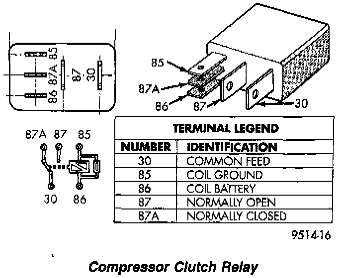

Compressor Clutch Relay: Testing and Inspection
Compressor Clutch Relay:

The compressor clutch relay is located in the Power Distribution Center (PDC). Refer to the PDC label for relay identification and location. Remove the relay from the PDC to perform the following tests:
1. A relay in the de-energized position should have continuity between terminals 87A and 30, and no continuity between terminals 87 and 30. If OK, go to Step 2. If not OK, replace the faulty relay.
2. Resistance between terminals 85 and 86 (electromagnet) should be 75(+/-5) ohms. If OK, go to Step 3. If not OK, replace the faulty relay
3. Connect a battery to terminals 85 and 86. There should now be continuity between terminals 30 and 87, and no continuity between terminals 87A and 30. If not OK, replace the faulty relay.